El Collar de Miguel
El collar de Miguel está hecho con una sola pieza, con engaste y cadena de cuero. Da protección a quien lo porta, ofreciendo valor, fe y voluntad. Inspirado en el Arcángel Miguel,el cuerno es el símbolo de su espada.
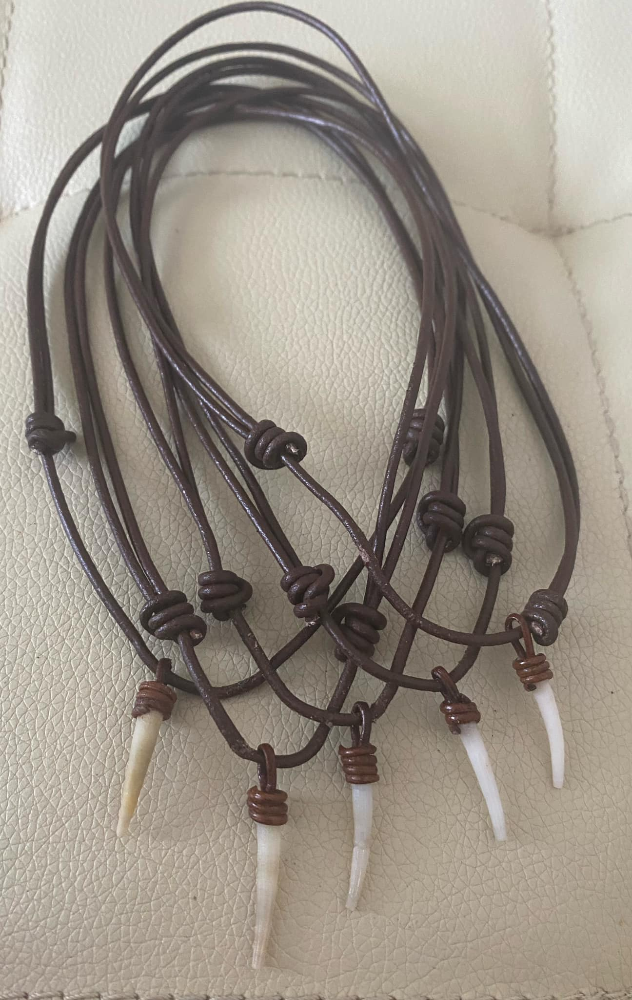
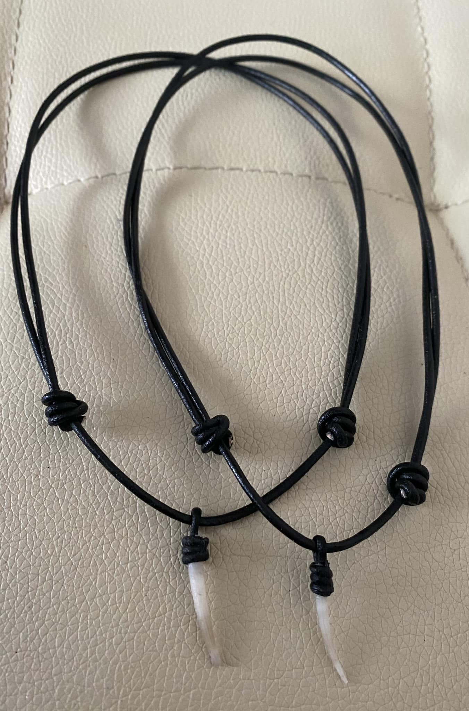
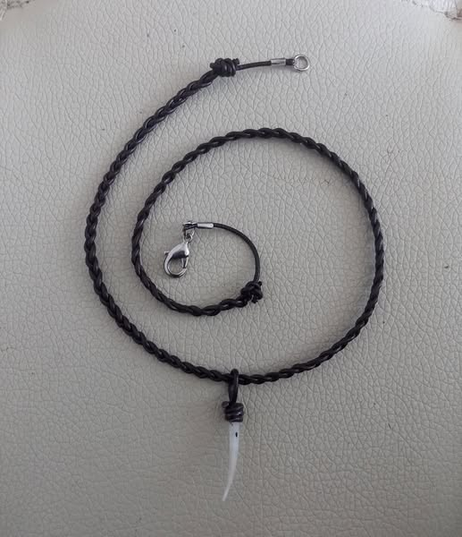
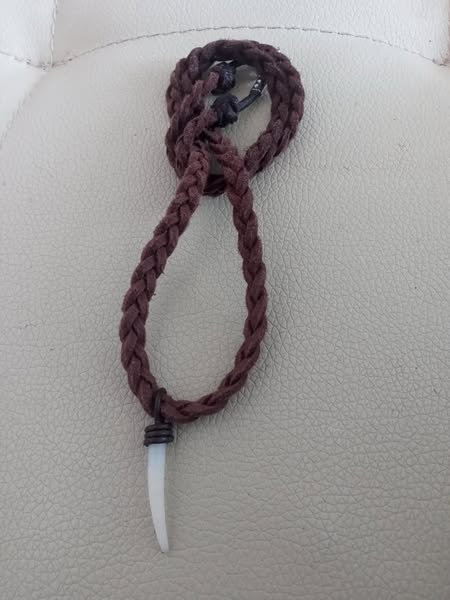
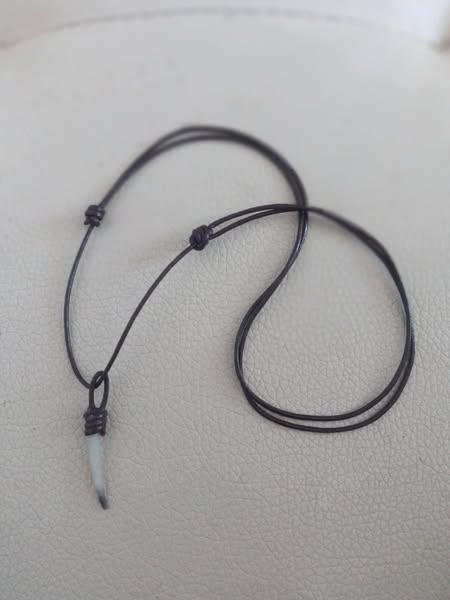
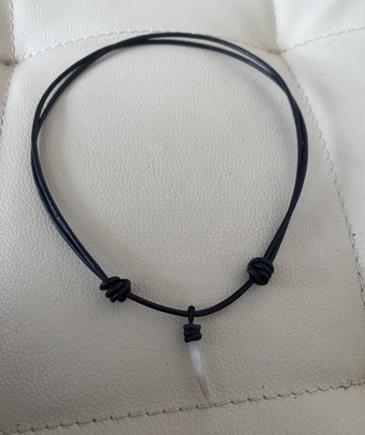
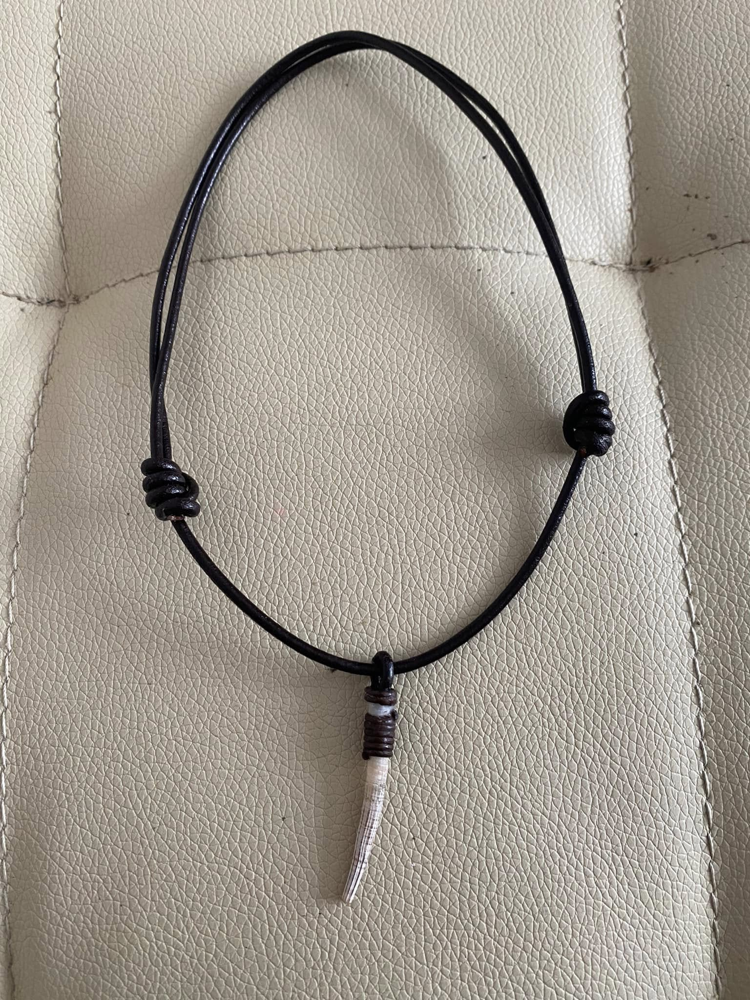
 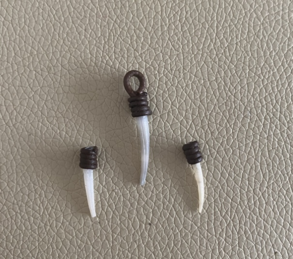
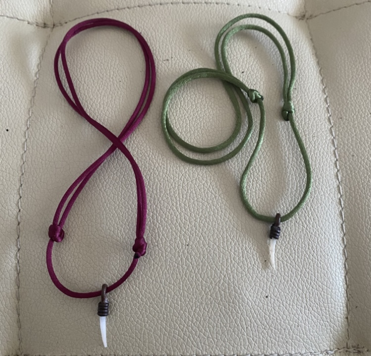
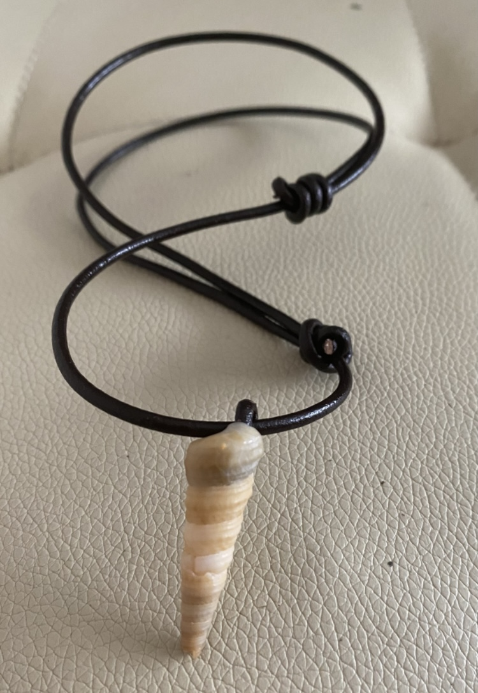
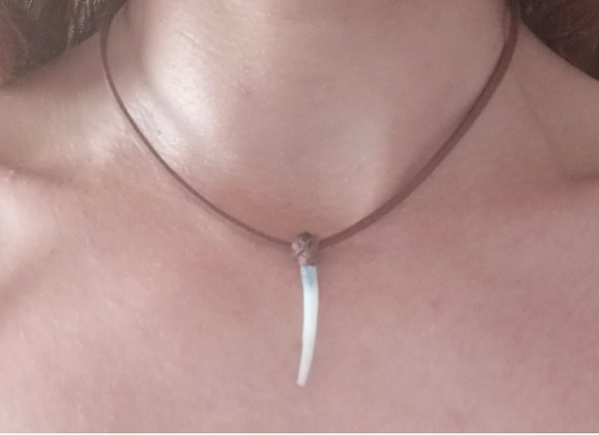
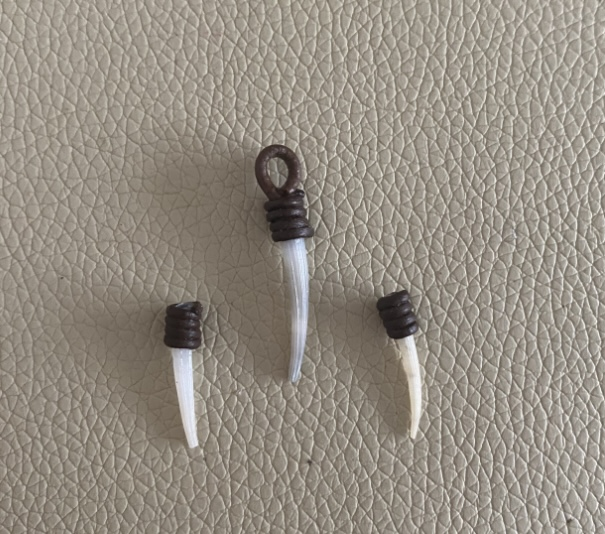
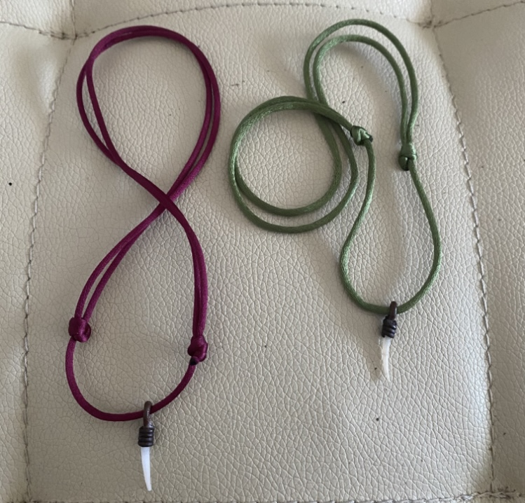
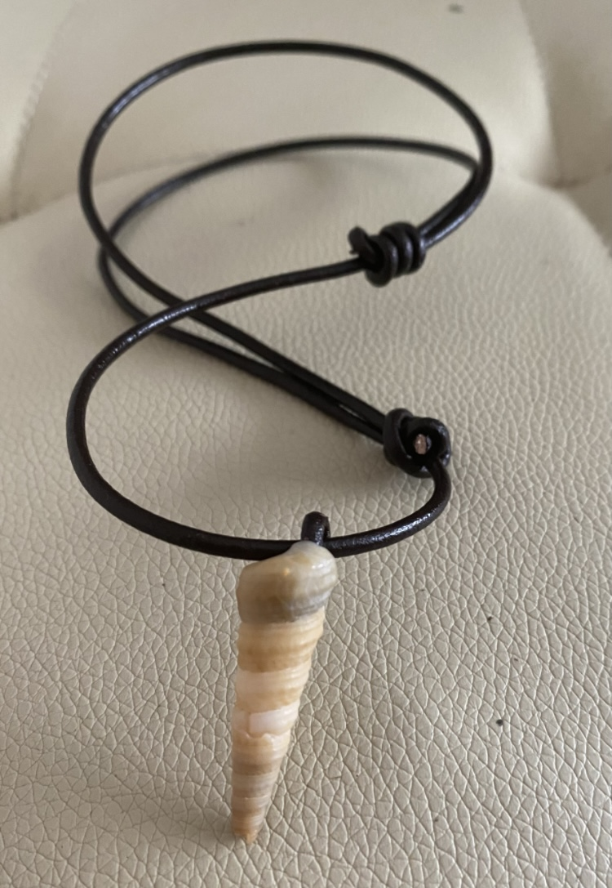
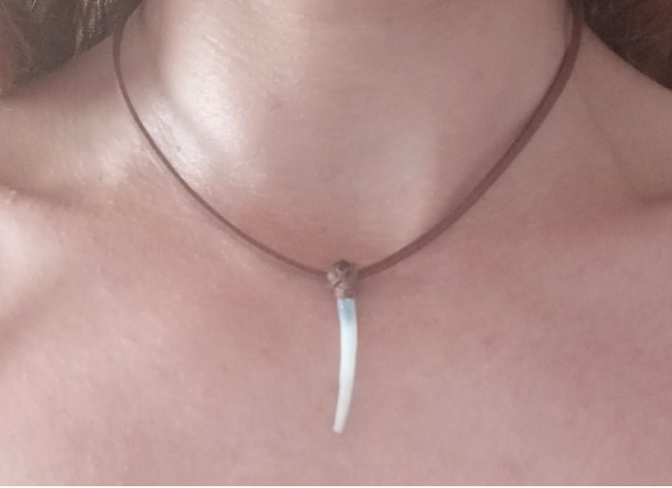

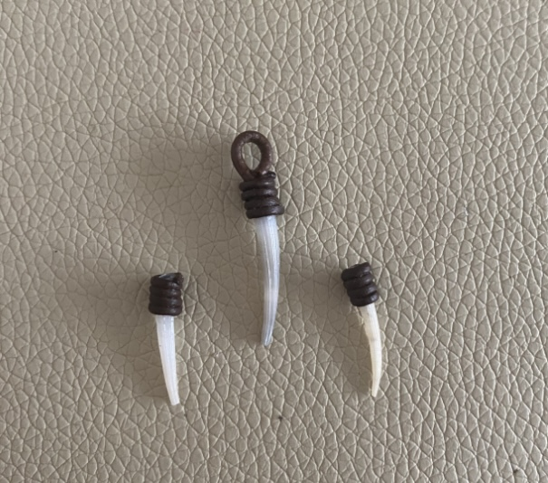
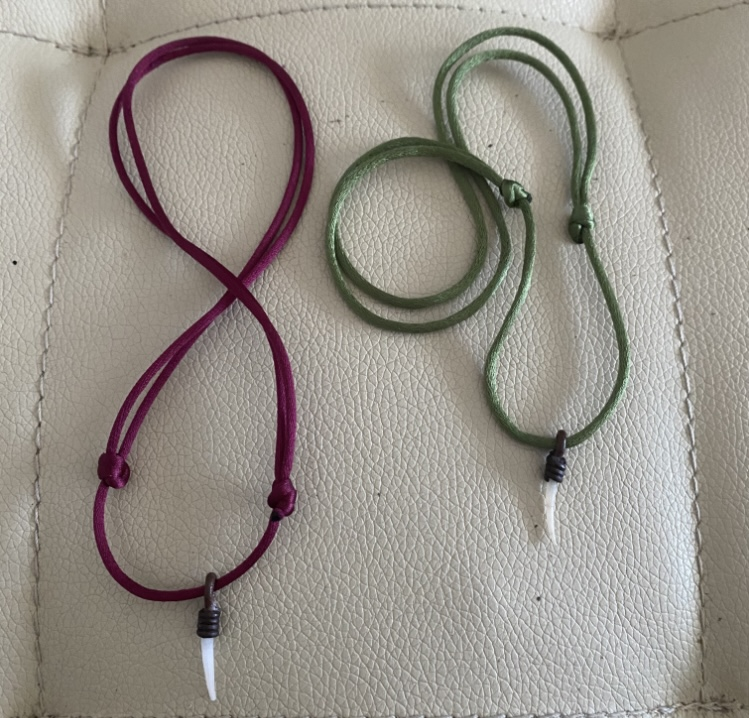
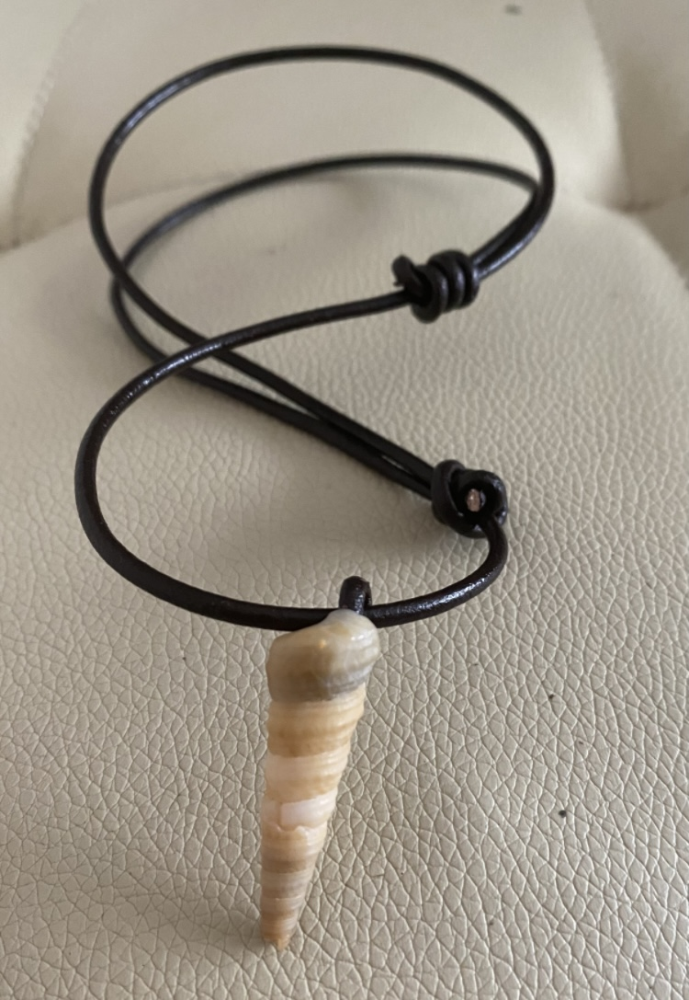
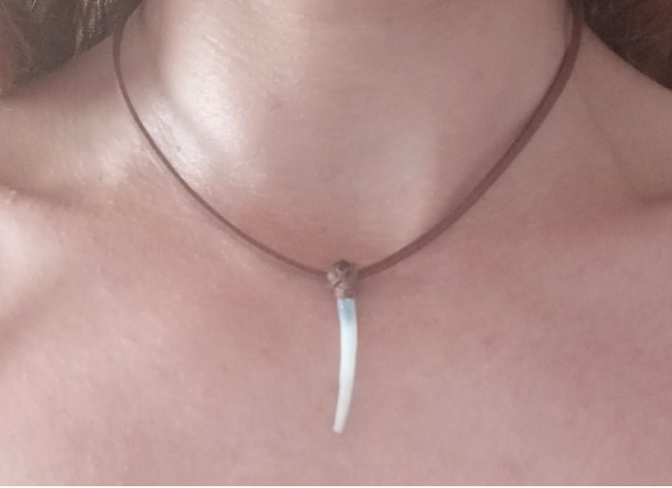